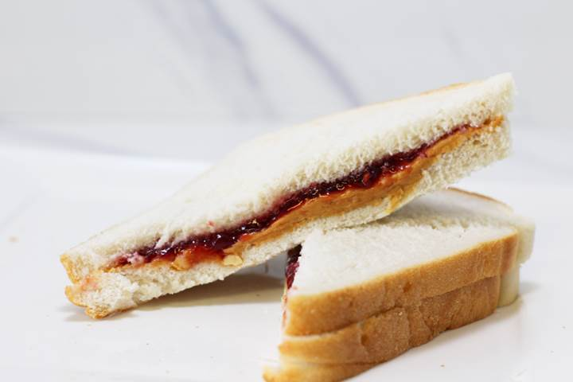
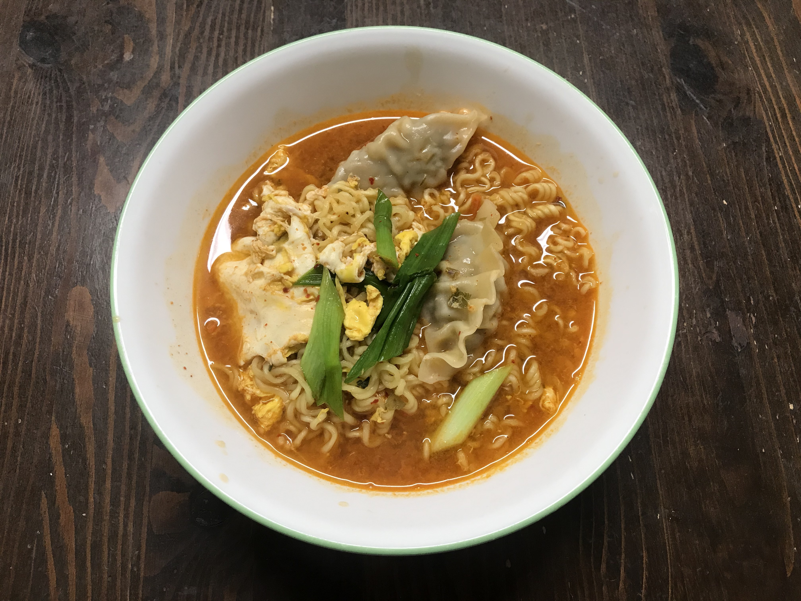

Peanut Butter and
Jelly Sandwich
Rich taste makes your life sweeter!
DIRECTIONS
- Spread the peanut butter on one piece of bread.
- Spread the jelly on the other side.
- Cut the sandwich in half and enjoy!

DIRECTIONS
- Pour 550 ml of water and bring to a boil.
- When the water boils, add flake and soup base.
- Add ramen noodles, egg and dumplings for better taste. Boil for 3 minutes.
- Add sliced green onions.
- Enjoy delicious Korean ramen!

DIRECTIONS
- Pour 550 ml of water and bring to a boil.
- When the water boils, add flake and soup base.
- Add ramen noodles, egg and dumplings for better taste. Boil for 3 minutes.
- Add sliced green onions.
- Enjoy delicious Korean ramen!